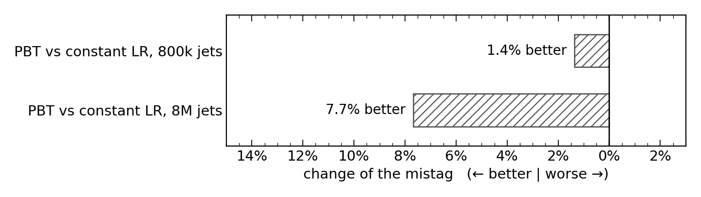
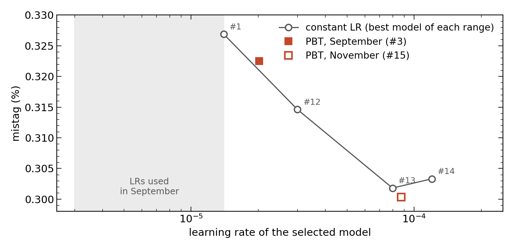
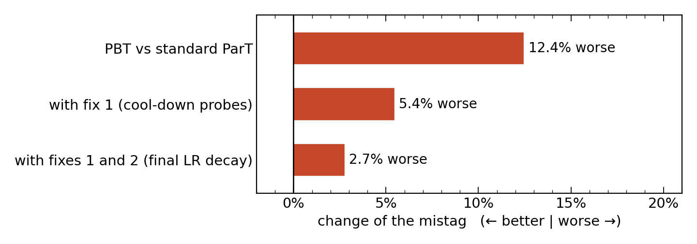
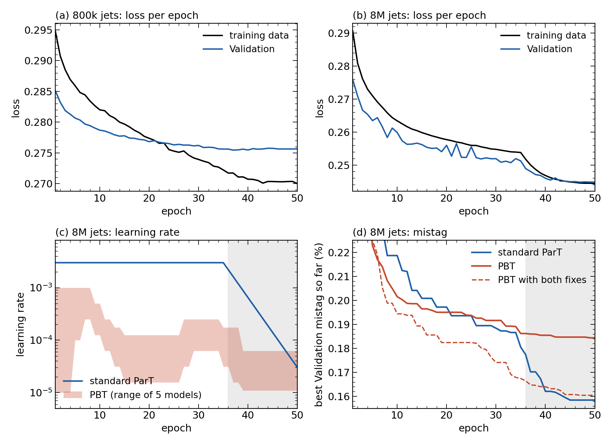

Does Population Based Training give a better jet tagger?
Only with little training data, and only by 0.8%. With much training data PBT is worse; there, an ensemble of two normally trained models gains 5%.
- Standard ParT: the usual training of this model. Constant learning rate (LR) for 35 epochs, then lowered ×0.01 over 15 epochs. Five start LRs; the best model is kept.
- PBT: five models train in parallel. Every few epochs the weakest copies the weights of the best one and changes its LR.
- Constant LR: five models, each with one LR for all 50 epochs.
- Numbers: mistag in % on Test data (2.8M jets, used once per model after selection); lower is better. Training data: 800k or 8M jets.

Main results. Bars to the left: lower mistag (better). Error bars: 95% interval for the Test sample (3 seeds).
Stage 1 · Sep 16 – Oct 21 · 800k, then 8M jetsPBT looked better than constant learning rates
Did: compared PBT with constant LRs, first on 800k jets, then on 8M jets.
Means: not valid. The best constant LR was always the highest one tried, so the constant LRs were too low (stage 2).

| # | Dates | Configuration | Result |
|---|---|---|---|
| 1 | Sep 16 | Constant LR, five values 3×10−6 to 1.4×10−5 | 0.3269; best value is the highest one |
| 2 | Sep 17–18 | Two of these LRs continued to 100 epochs | 0.3156 |
| 3 | Sep 18 | PBT, LR changed every 5 epochs (×0.8 or ×1.2), at most 3×10−5 | 0.3225: 1.4% better than #1 |
| 4 | Sep 19 | PBT as #3, 100 epochs | 0.3111: 1.4% better than #2 |
| 6 | Sep 23–29 | PBT, LR changed every epoch or every 5 epochs; 2 seeds | no clear difference |
| 10 | Oct 14–21 | 8M jets: constant LR as #1 against PBT as #3; fixed in advance | 7.7% better (Test 9.0M) |
Stage 2 · Nov 3 – Nov 9 · 800k jetsA higher constant LR does what PBT did
Did: tried constant LRs up to 3×10−4 and a faster PBT.
Means: the mistag falls with the LR up to about 10−4, and both PBT runs lie on that curve. PBT gained because it reached a higher LR. The result also flipped with another seed, so from here models are selected on 1M Validation jets (before: 150k) and compared with standard ParT.

| # | Dates | Configuration | Result |
|---|---|---|---|
| 12 | Nov 3 | Constant LR 1.4×10−5 to 3×10−5 | 0.3146; best is again the highest |
| 13 | Nov 3–4 | Constant LR 3×10−5 to 8×10−5 | 0.3018: better than every PBT run before |
| 14 | Nov 4 | Constant LR 8×10−5 to 3.2×10−4 | 0.3033: no further gain |
| 15 | Nov 4 | Faster PBT: LR changed every 2 epochs (×0.5 or ×2), at most 5×10−4 | 0.3003: 1.0% better than #14 |
| 16 | Nov 9 | #14 and #15 again with another seed | PBT 0.5% worse: the sign reverses |
| 17 | Nov 9 | Faster PBT with extra weight copies | 0.8% worse than #15 |
Stage 3 · Nov 10 – Nov 13 · 800k jets · 3 seedsWith 800k training jets, PBT is 0.8% better
Did: PBT, standard ParT and constant LR, each with three seeds.
Means: PBT is better than standard ParT for every seed (0.67%, 0.85%, 0.91%; 95% interval 0.34 to 1.34%). Small, but real.

| # | Dates | Configuration | Result |
|---|---|---|---|
| 18 | Nov 10–13 | Standard ParT, constant LR and PBT; 3 seeds | PBT 0.81% better than standard ParT |
| 19 | Nov 12 | PBT with a final LR decay; 2 seeds | same result as #18 |
| 20 | Nov 12 | Standard ParT from random weights (no pretraining) | far worse |
| 21 | Nov 12 | Averaging the weights of several checkpoints | no gain |
Stage 4 · Nov 14 – Nov 23 · 8M jets · 1 seedWith 8M training jets, PBT is worse
Did: the same comparison with ten times more training data; then two fixes to PBT.
Means: PBT is 12.4% worse than standard ParT; with both fixes still 2.7% worse.

| # | Dates | Configuration | Result |
|---|---|---|---|
| 22 | Nov 14–15 | Standard ParT, start LR 10−5 to 10−3 | 0.1635; best is the highest |
| 23 | Nov 15–17 | PBT, LR at most 10−3 | 0.1812: 12.4% worse than #24 |
| 24 | Nov 19–20 | Standard ParT, start LR 3×10−3 | 0.1611: the reference |
| 25 | Nov 19–21 | PBT with fix 1: judge each LR after a short cool-down | 0.1699: 5.4% worse than #24 |
| 26 | Nov 20–23 | PBT with fixes 1 and 2: plus the final LR decay | 0.1655: 2.7% worse than #24 |
Why: with 800k jets the model starts to memorise its training data after about 20 epochs (a), so lowering the LR early helps, and PBT does that. With 8M jets it does not memorise (b); then a high LR for 35 epochs and a decay at the end is best. PBT judges each LR change after two epochs, where a lower LR almost always looks better, so it lowers the LR early (c) and loses in the final decay (d, grey).

Stage 5 · Nov 23 – Nov 25 · 8M jets · 3 seedsWith 8M training jets, an ensemble of two models is 5% better
Did: averaged the outputs of the two standard ParT models of one seed (start LRs 3×10−3 and 10−3). Fixed this test in advance, then repeated it with two new seeds.
Means: 5.0% better than the better model alone, on every seed (95% interval 4.2 to 5.8%). Standard ParT trains both models anyway; the cost is running two models. PBT models do not help here, because PBT copies weights between them.

| # | Dates | Configuration | Result |
|---|---|---|---|
| 27 | Nov 23 | Ensemble: average of the outputs of #22 and #24 | 0.1530: 5.1% better than #24 |
| 28 | Nov 23–25 | The same ensemble with two new seeds | 4.9% and 5.1% better; mean 5.0% |
| 29 | Nov 23 | Ensembles of the 800k models | no gain |
| 31 | Nov 23–24 | Final LR decay of #24 without dropout | worse |
| 32 | Nov 24 | Distillation: train one model on the ensemble output | no gain |
| 33 | Nov 24–25 | Standard ParT, start LR 10−2 | 0.1599: same as #24 |
Limits: the 8M PBT runs have one seed; all runs start from one pretrained model; the Test data was also looked at in checks before November. Not shown: July–August set-up with an older training method, and technical checks (trials 5, 7, 8, 9, 11, 30); see the full trial list.